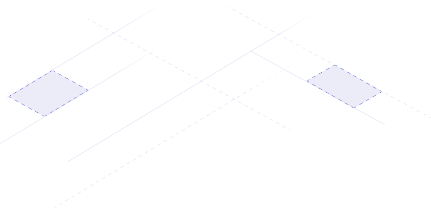

Star
StarHow does it work
Qovery Engine is an open-source abstraction layer product that turns easy apps deployment on AWS, GCP,
Azure and others Cloud providers. The Qovery Engine is coded in Rust and takes advantage of Terraform,
Helm, Kubectl, Docker to manage resources.
Usage
Initialize EKS (AWS Kubernetes) and ECR (AWS container registry) on AWS
